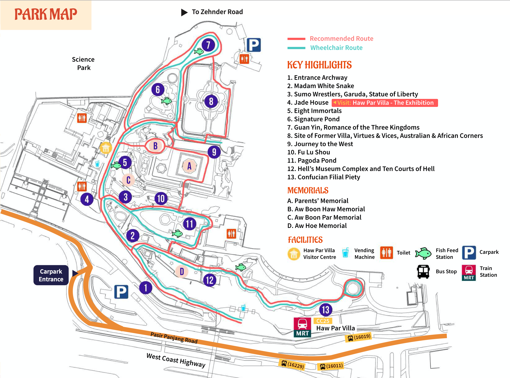
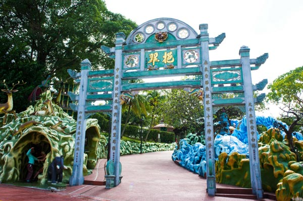
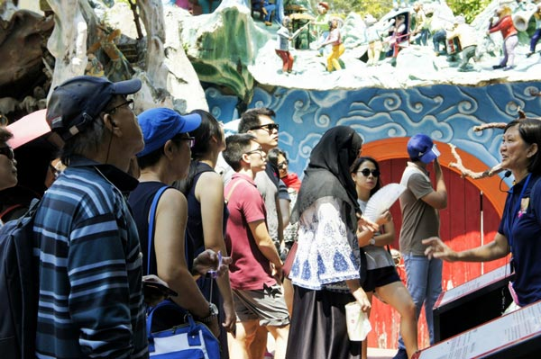
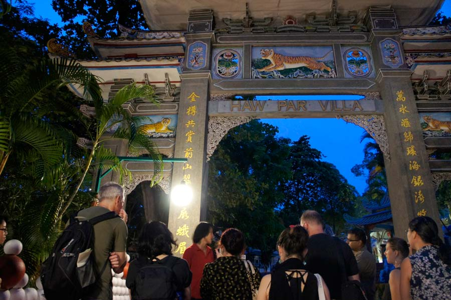
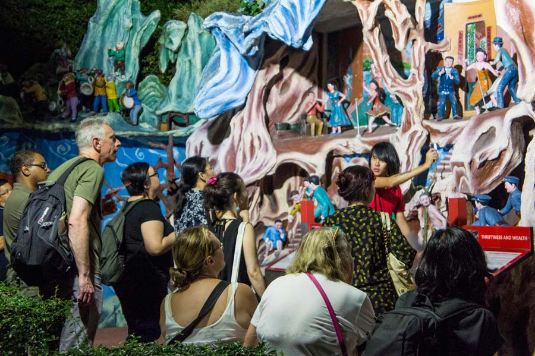
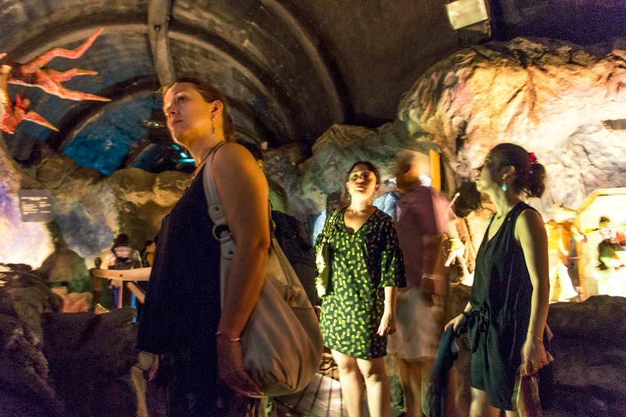

Haw Par Villa - formerly known as the Tiger Balm Garden - is an 8.5-hectar Asian cultural park, the last of its kind in the world. Built in 1937, Singapore's largest outdoor art gallery is the brainchild of Aw Boon Haw, the millionaire philanthropist and marketing extraordinaire who gifted the world Tiger Balm. The eclectic part is a treasure trove of Asian culture, history, philosophy and religion - quirky yet enlightening, at the same time. Since 2015, it is managed by Journeys Pte Ltd, an award-winning heritage specialist passionate in preserving and bringing the heritage gem to greater heights.
Ascend, dear wanderers, on the signature red brick road, through the majestic entrance archway. Look out for Chinese classics such as Journey to the West and the Eight Immortals. Tigers, leopards and dragons lurk in corners. Rolling hills and caves evoke contemplation and reflection. Elsewhere in the park, animals of all shapes and sizes beckon: goats, pandas, rabbits, gorillas, giant lobsters, even a crab-lady, the list goes on. Here - use this map - it will show you the way around the park. Enter the park via the main gate close to the Haw Par Villa MRT Station.
Daily Tour: Finding your Tao in Haw Par Villa - The Tiger Balm Garden Story
 Home to a dizzying array of 1,000 sculptures and dioramas, a trip to the eclectic Haw Par Villa is not to be missed! Discover a treasure trove of Asian culture, history, philosophy and religion within Haw Par Villa's surreal landscape - we'll let you in on the intriguing stories behind the park and the illustrious Aw brothers on our hour-long tour.
Tour Timings: Daily 9.30-10.30am
Meeting Point: Haw Par Villa Visitor Centre
Price: Adult $10, Child (7-12y/o) $5
Weekly Twilight Tour: Journeys to Hell - Death and the Afterlife in Haw Par Villa
  See the park in a new light - after dark, if you dare! Learn how death stalked the Aw family, and what Boon Haw did to confront his mortality. Get a sneak preview of the upcoming Hell's Museum, with perspectives of death and the afterlife across various religions. Step into the infamous Ten Courts of Hell to see what will get you dismembered and drowned in a pool of blood. And we'll show you how some Singaporeans communicate with the afterlife. We promise you'll never see the dying - and living - in the same way again.
Tour Timings: Every Friday 6.30-8.30pm except PH
Meeting Point: Haw Par Villa MRT Station, outside Exit A
Price: Adult $20, Child (7-12 y/o) $10
Haw Par Villa is located along Pasir Panjang Road, and is easily accessible via public transport and car.
The MRT station is just a minute's walk from the entrance of the park.
Address:
262 Pasir Panjang Road, Singapore 118628
Opening Hours:
9am-10pm daily, including weekends and PH (last entry 9.30pm)
Getting there by train:
Haw Par Villa Station CC25 (Circle Line)
1-min walk from park's entrance!
Getting there by bus:
Bus Stop (16019), one minute walk away: Bus no. 10, 30, 30e, 51, 143, 188, 200
Bus Stop (16011), opp Haw Par Villa Station: Bus no. 10, 30, 30e, 51, 143, 188, 200
Bus Stop (16229): Bus no. 175, 176, 589
It is an open-air park, so bring your brolly and wear comfortable walking shoes.
Cameras are essential if you love fond memories and sharing them.
Haw Par Villa is probably the most Instagram-able place in Singapore!
We're a dog-friendly park! All dogs must be leashed. Big dogs must be muzzled for the safety of visitors.
Map:
Follow and tag Haw Par Villa on Instagram @hawparvilla.sg